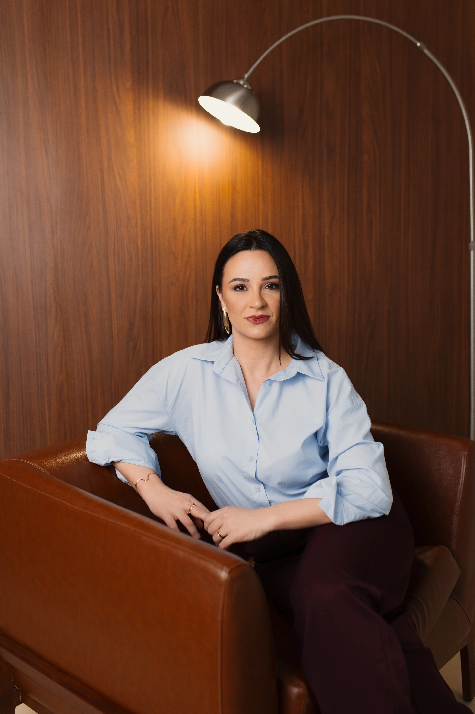

Organização, prevenção e planejamento para decisões seguras.
Atuamos na orientação jurídica de pessoas, famílias e empresas, integrando conhecimento jurídico, visão empresarial e análise estratégica para organizar relações, prevenir riscos e oferecer segurança às decisões.
Sobre o Escritório
Duas trajetórias. Uma visão complementar do Direito.

Uma atuação integrada
Direito Tributário
Análise e orientação jurídica em questões tributárias de pessoas físicas e jurídicas, considerando obrigações fiscais, planejamento, passivos e os impactos tributários das operações e decisões.
Direito Empresarial e Societário
Orientação jurídica para empresas e empreendedores, considerando a estruturação dos negócios, as relações societárias e a segurança das operações.
Direito Patrimonial e Sucessório
Orientação jurídica a pessoas físicas e famílias na organização, proteção e transmissão do patrimônio, considerando aspectos familiares, sucessórios e tributários.
Direito do Trabalho
Assessoria e orientação jurídica nas relações de trabalho, com atenção à prevenção de passivos, à conformidade legal e à segurança das relações entre empregadores e colaboradores.
Governança, Gestão de Riscos e Proteção de Dados
Atuação voltada à identificação de vulnerabilidades e à estruturação de práticas de governança, conformidade e proteção de informações, considerando os riscos jurídicos e organizacionais.
Decisões importantes exigem orientação jurídica adequada.
Cada situação possui particularidades que merecem análise criteriosa e orientação individualizada. A Arnhold & Jubett Advocacia está à disposição para conhecer sua demanda e avaliar as possibilidades de atuação jurídica.